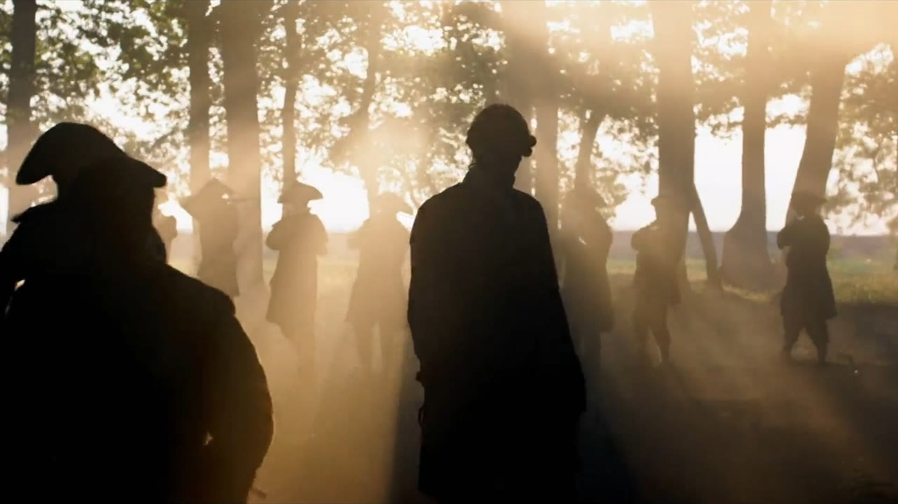

Brand directions.
Incandescent Studios is a New York television production company founded by veteran producers behind premium documentary and scripted series for Netflix, History, Discovery, and Fox Nation. The identity should feel cinematic, intelligent, modern, and established without becoming nostalgic, corporate, or overly literal. It must give the work room to lead, hold up across film stills, decks, title cards, social, and production materials, and make Incandescent feel like a point of view rather than a light bulb motif.
The current direction.
The supplied wordmark shown as a complete identity. This is the most familiar route: clean, legible, and easy to carry across production materials with minimal change.

Big, graphic, and cinematic.
An oversized stacked wordmark gives the studio a tougher production-world presence. Hard crops, dense typography, and a signal red accent make the identity direct and unmistakable.
Quiet auteur prestige.
A high-character signature wordmark brings a more personal point of view. Restrained typography, generous space, and carefully framed stills make the studio feel established without feeling institutional.
The name becomes architecture.
A monumental serif wordmark structures the frame and holds its own beside large cinematic imagery. Supporting layouts behave like a production slate, with a clear hierarchy and a controlled sense of scale.